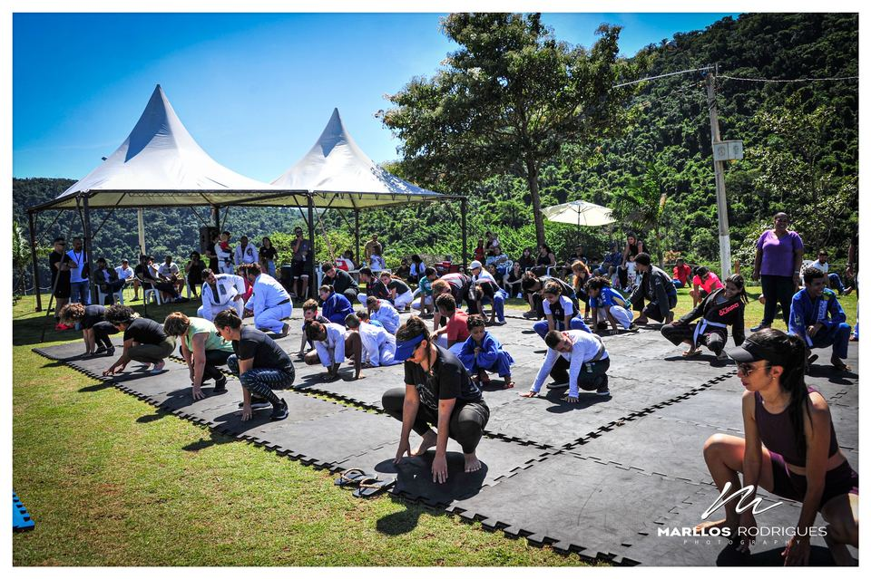
Existem crianças que só precisam de uma oportunidade
E pessoas dispostas a caminhar com elas.
Esporte educacional como ferramenta de transformação social. Conheça o Instituto Pró-Ativo e o Projeto Jiu-Jitsu Para Todos, em Ourinhos/SP.
Um projeto social que usa o jiu-jitsu como caminho de formação humana
O Instituto Pró-Ativo é uma Organização da Sociedade Civil comprometida com a promoção da cidadania, da educação e da qualidade de vida.
Promovemos inclusão social, fortalecimento escolar e desenvolvimento integral de crianças e adolescentes por meio do esporte educacional — tendo o jiu-jitsu como principal ferramenta.
Nosso público prioritário são alunos da rede pública, de 6 a 17 anos, em situação de vulnerabilidade social, indicados por escolas, CRAS e conselho tutelar — incluindo crianças e adolescentes atípicos.
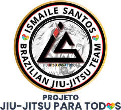
O Projeto Jiu-Jitsu Para Todos é a nossa principal iniciativa: formando atletas, construindo caráter, transformando histórias.
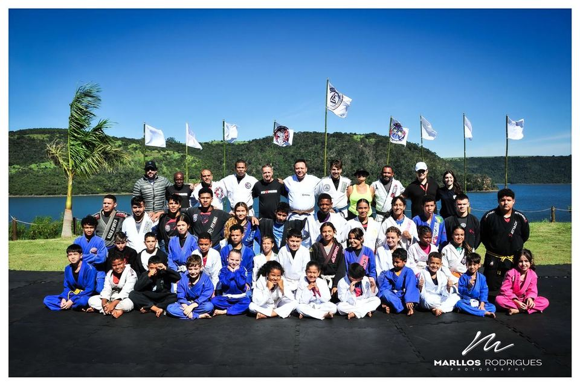
Tudo começou com um tatame
Com poucas crianças, um tatame simples e uma certeza: o esporte transforma.
- 2015 O Projeto Jiu-Jitsu Para Todos nasce com 8 alunos, por iniciativa do Professor Humberto Betão (in memoriam) e seus alunos, ao perceberem o interesse crescente das crianças do bairro. Entre eles estava o atual Sensei Ismaile Santos, que desde o início assumiu a linha de frente, de forma voluntária.
- Desafios e pandemia O projeto cresceu de forma orgânica e responsável, passou por diferentes espaços e manteve suas atividades mesmo durante a pandemia, sob a supervisão técnica do Sensei Ismaile Santos, faixa preta 1º grau (federado CBJJP).
- 2021 Ampliamos nosso olhar para acolher crianças com Transtorno do Espectro Autista (TEA) e, depois, com TDAH, dificuldades de comunicação e não verbais — adaptando metodologia, ritmo e abordagem.
- Hoje Mais de uma década de compromisso com o esporte e a formação social. O tatame se tornou espaço seguro, de inclusão real e de conquistas que vão muito além das faixas.
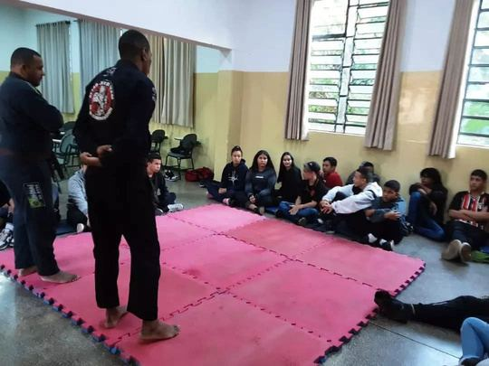
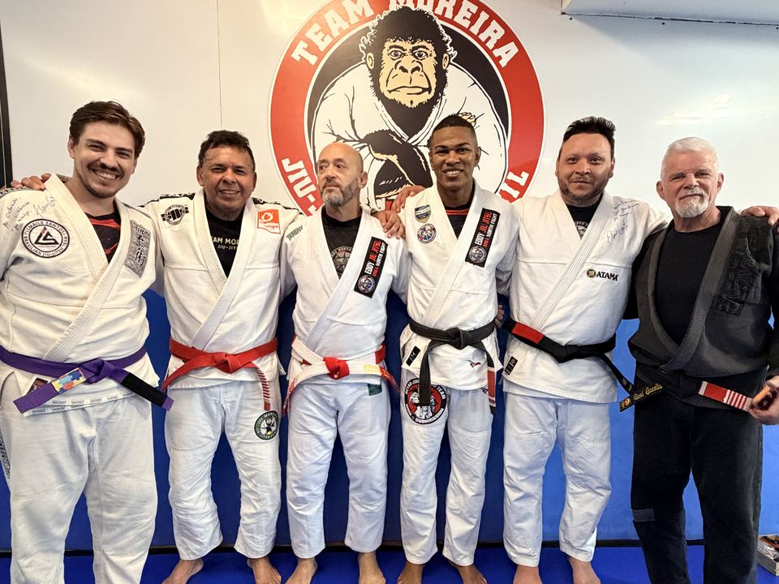
Linhagem e tradição
O projeto carrega a bandeira da equipe Eddy North Fighter, liderada pelo Mestre Eddy North, faixa coral 8º grau, reconhecido pela CBJJP. Mestre Eddy foi aluno direto de Reylson Gracie — filho de Carlos Gracie, um dos fundadores do jiu-jitsu no Brasil — e graduado pelo Grande Mestre Joe Moreira (9º grau).
O desafio social
Muitas crianças e adolescentes enfrentam diariamente desafios que impactam diretamente seu desenvolvimento.
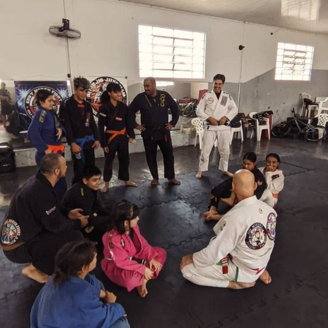
Falta de acesso
Ao esporte e a atividades extracurriculares.
Violência e ociosidade
Exposição diária a situações de risco.
Baixa autoestima
E dificuldade de disciplina e de rotina.
Evasão escolar
Risco real de abandonar os estudos.
Sem oportunidades adequadas, esses jovens ficam mais vulneráveis a situações que comprometem seu futuro. Muitos encontram no tatame o que faltava: direção, pertencimento e acolhimento.
Da quadra à sala de aula
Atuamos em quatro frentes que se complementam para cuidar de cada criança por inteiro.
Esporte
Jiu-jitsu por faixa etária e nível técnico, pilates, yoga e aula coletiva mensal de integração.
Educação
Informática, aulas experimentais em escolas parceiras e APAEs, palestras sobre disciplina e cidadania.
Desenvolvimento humano
Equipe multidisciplinar — psicologia, terapia ocupacional, fonoaudiologia e fisioterapia — para crianças típicas e atípicas.
Família e escola
Anamnese de cada caso, monitoramento de frequência e notas, reuniões periódicas com gestores escolares e famílias.
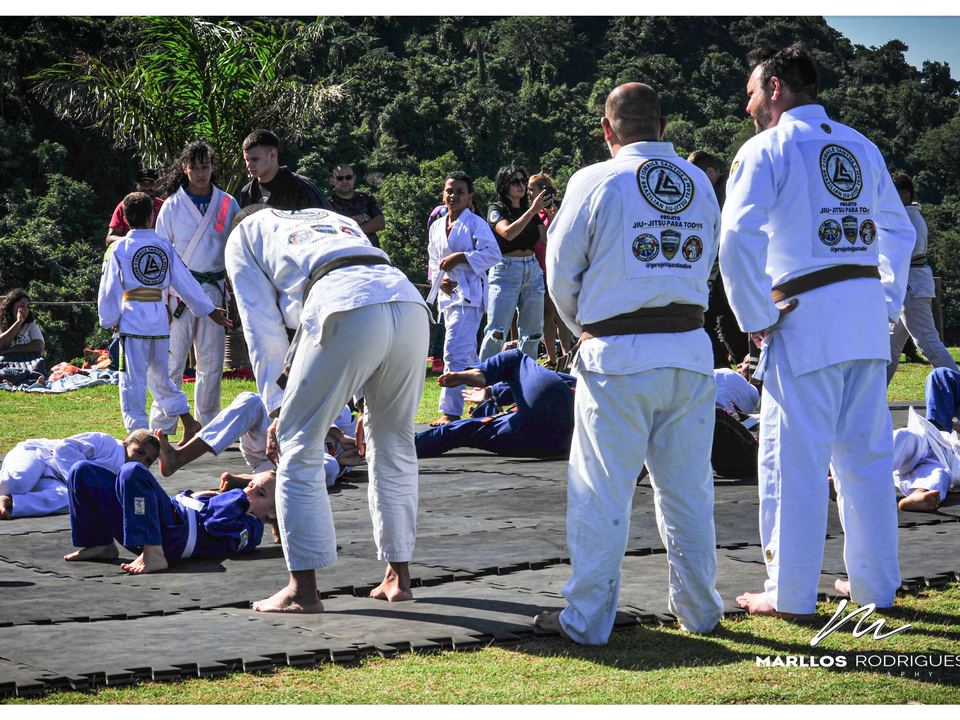
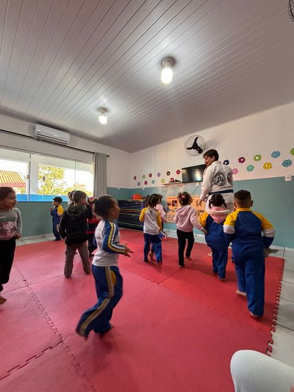
Mais que esporte, uma ferramenta de transformação
Nossa metodologia é estruturada em quatro pilares formativos, trabalhados de forma equilibrada no desenvolvimento técnico e humano dos alunos.
Disciplina e respeito
Limites, hierarquia, convivência e responsabilidade — dentro e fora do tatame.
Foco, persistência e superação
A progressão de faixas estimula metas claras, constância e autoconfiança.
Trabalho em equipe
Respeito ao parceiro de treino e à importância do grupo.
Autocontrole emocional
Lidar com frustração, ansiedade e desafios de forma saudável.
Como trabalhamos
- Aulas de jiu-jitsu três vezes por semana, por faixa etária e nível técnico, respeitando o tempo de cada aluno.
- Controle de frequência e acompanhamento da evolução técnica e comportamental.
- Turmas de crianças atípicas em grupos menores, com apoio multidisciplinar.
- Encaminhamento pela escola ou pela família, seguido de anamnese para adaptar rotina e turma.
- Professor qualificado e monitor auxiliar, com envolvimento constante das famílias.
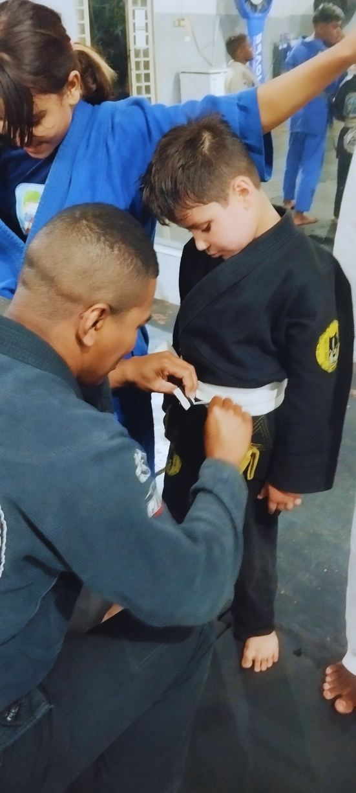
Formação técnica e projeção esportiva
O projeto não apenas inclui. Ele prepara e projeta.
- Sistema de graduação estruturado e federado
- Participação em campeonatos e eventos
- Desenvolvimento técnico progressivo
- Identificação e incentivo a talentos
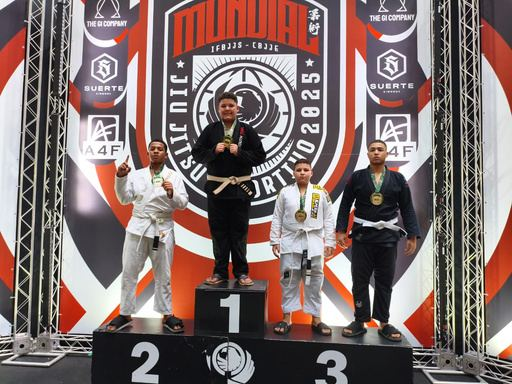
Momentos do projeto
Aulas, aulões abertos, eventos e graduações: um pouco do que acontece dentro e fora do tatame.
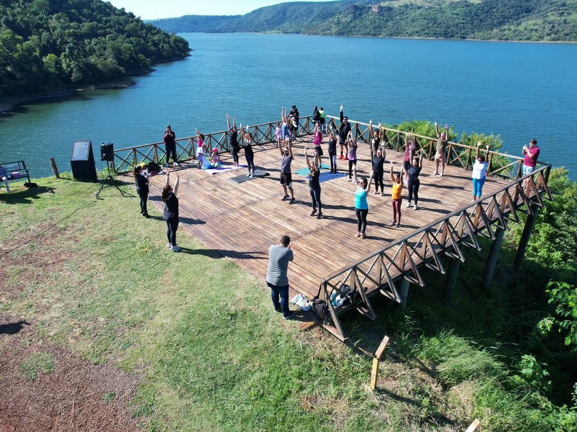
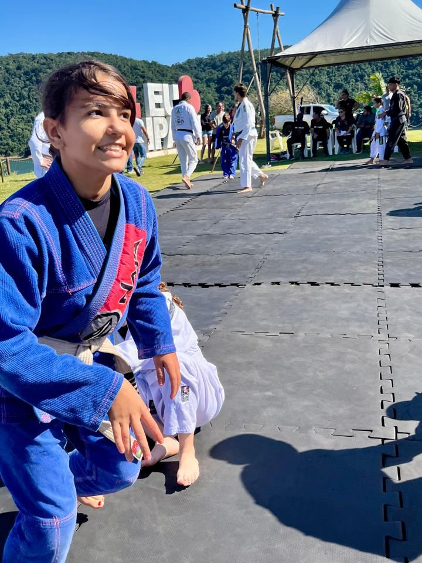
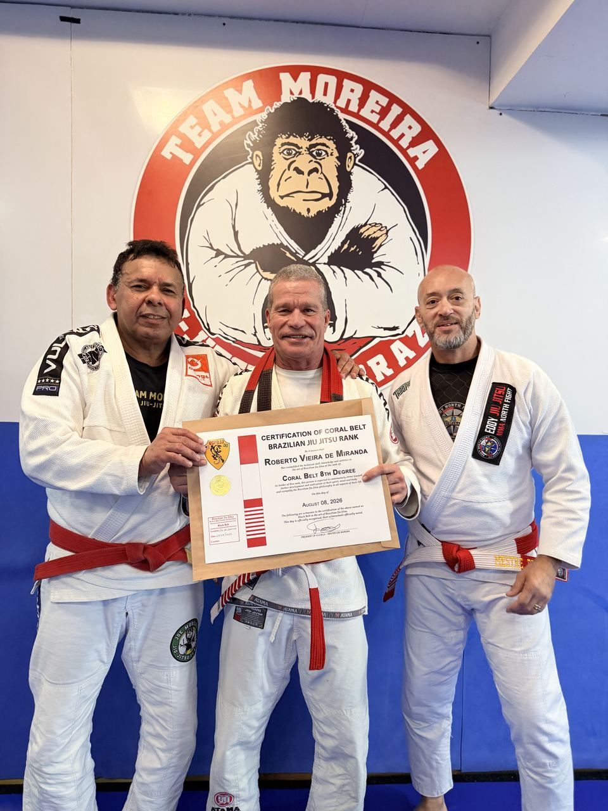
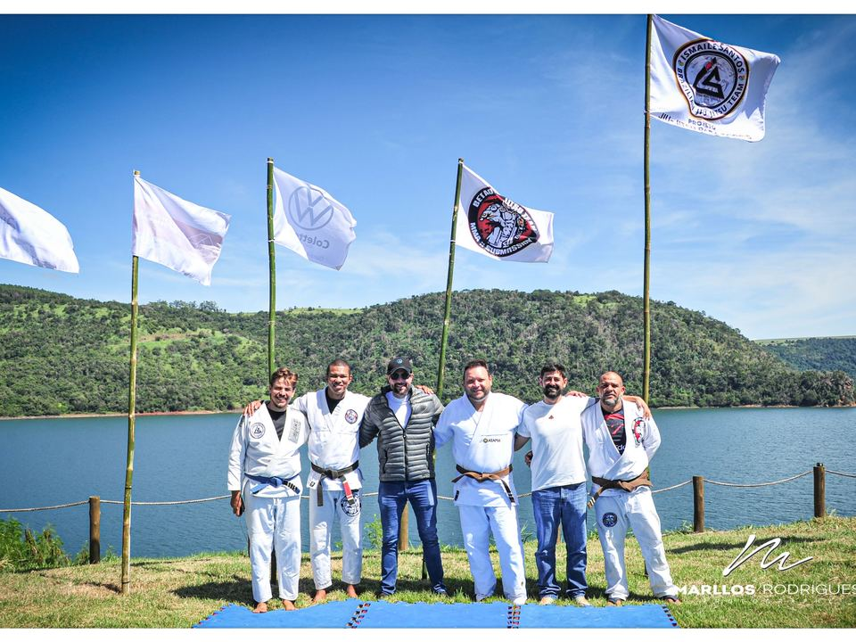
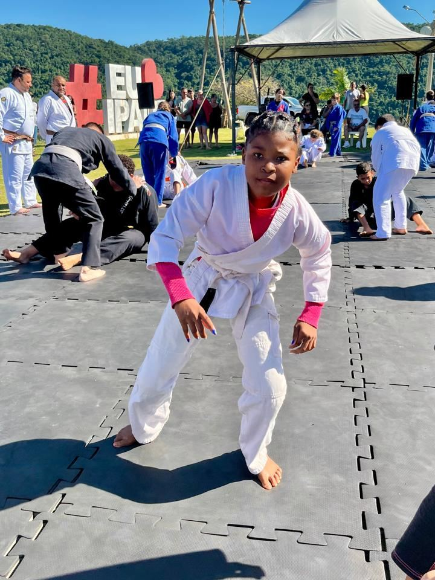
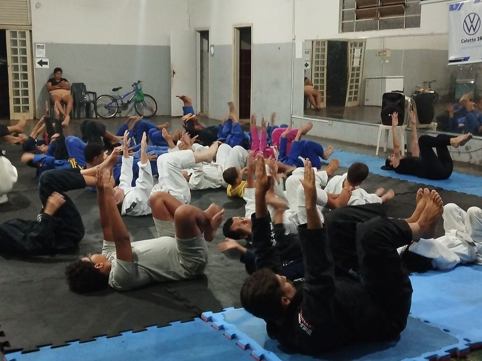
Nosso time
Pessoas que dão vida ao projeto, dentro e fora do tatame.
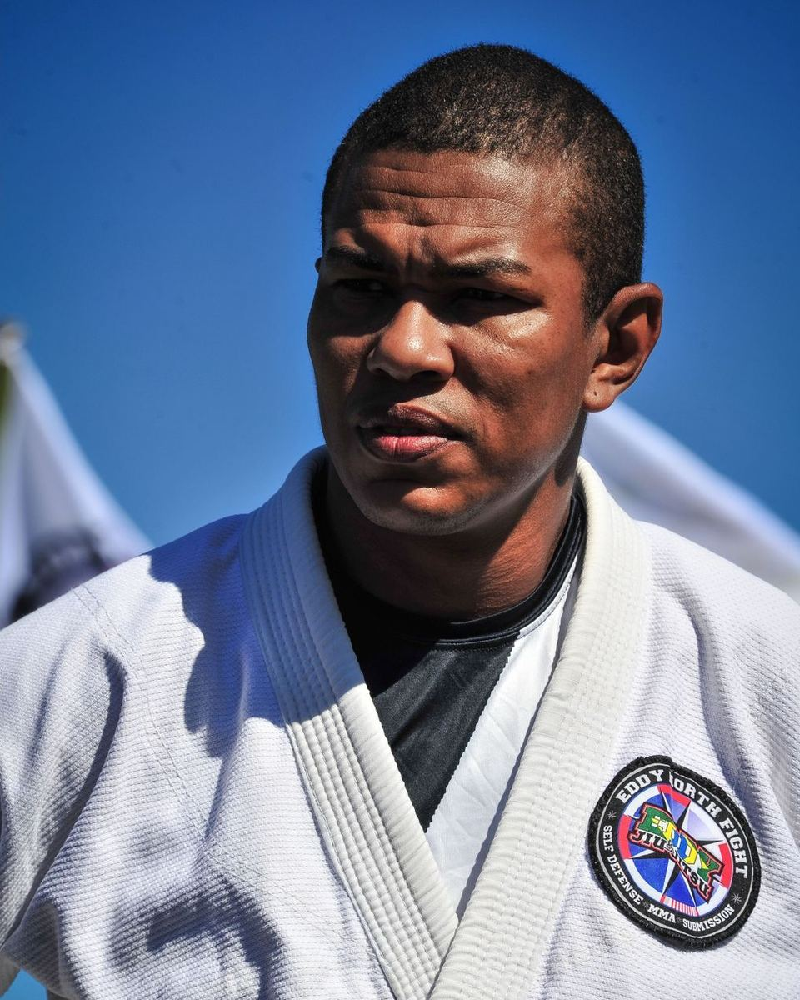
Sensei Ismaile Santos
Professor faixa preta 1º grau · Federado CBJJP
Aluno do Professor Humberto Betão (in memoriam), assumiu a linha de frente do Jiu-Jitsu Para Todos desde o seu início, em 2015, de forma voluntária, e conduz as atividades desde então — inclusive durante a pandemia.
Foi sob a sua supervisão técnica que o projeto passou a acolher, a partir de 2021, crianças com TEA, TDAH e outros desafios de desenvolvimento, adaptando metodologia, ritmo e abordagem.
Carrega a bandeira da equipe Eddy North Fighter, ligada à tradição do jiu-jitsu Gracie.
Fernando Santim
InstrutorColaborador no desenvolvimento dos treinos, viagens e parcerias.
César Evaristo
InstrutorColaborador no desenvolvimento dos treinos e de projetos dentro e fora do tatame.
Orlando Weber
InstrutorColaborador no desenvolvimento dos treinos, da marca e da metodologia kids, sob supervisão do sensei responsável.
Impacto e metas
Hoje atendemos mais de 100 crianças e adolescentes. Queremos ampliar esse alcance para até 200 alunos, com acompanhamento estruturado, envolvimento familiar e formação técnica responsável.
Onde estamos
Nossas metas
Indicadores que acompanhamos
- Frequência escolar
- Evolução comportamental
- Participação familiar
- Progressão técnica
Desenvolvimento educacional
- Disciplina e responsabilidade
- Redução da evasão escolar
- Melhora no comportamento e no rendimento
- Rotina e comprometimento
Fortalecimento familiar e social
- Aproximação das famílias
- Ambiente seguro no contraturno escolar
- Menos exposição à ociosidade e ao risco
- Construção de vínculos positivos
Desenvolvimento emocional e cidadão
- Controle emocional e autocontrole
- Respeito às regras e à hierarquia
- Trabalho em equipe
- Formação de caráter e valores sociais
Segurança, governança e rede de apoio
Estrutura jurídica, transparência e responsabilidade para cuidar de cada criança — e de cada apoio recebido.
Segurança e conformidade
- Professores federados (CBJJP)
- Exame toxicológico periódico
- Antecedentes criminais verificados
- Certificação em primeiros socorros
- Formação para atuação com TEA e TDAH
Equipe multidisciplinar de apoio
- Assessoria jurídica
- Assistência social
- Educador físico
- Nutricionista
- Psicólogos parceiros
Cultura e compromisso
- Ética e transparência
- Ambiente seguro e inclusivo
- Acompanhamento pedagógico
- Acompanhamento familiar
- Formação continuada
Estrutura institucional
- Conselho fiscal constituído
- Diretoria voluntária
- Contabilidade permanente
- Estatuto com abrangência nacional
- Núcleo piloto em Ourinhos/SP
Rede de apoio
As ações complementares acontecem por meio de parcerias com profissionais apoiadores, universidade e laboratório da Unifio, estudantes em formação, escolas municipais e estaduais, CRAS e conselho tutelar — sempre com acompanhamento técnico e coordenação responsável.
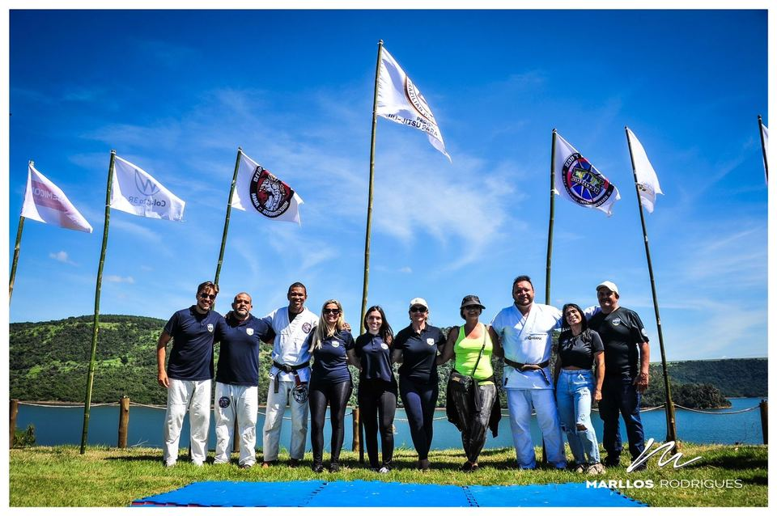
Como você pode fazer parte
Empresários, profissionais, educadores, líderes: impacto social é responsabilidade coletiva.
Estamos estruturando e fortalecendo o projeto para ampliar nosso alcance e atender ainda mais crianças. Queremos que você conheça essa história de perto — não como espectador, mas como parte dela. Porque grandes transformações não acontecem sozinhas: elas são construídas por pessoas.
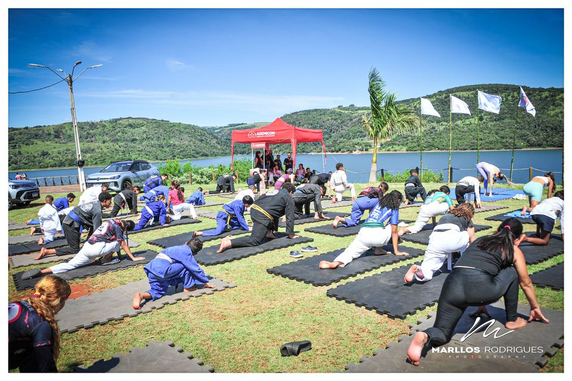
Conhecimento
Contribua com o que você sabe: palestras, mentorias, oficinas.
Estrutura
Apoie com espaço, materiais, equipamentos ou serviços.
Experiência profissional
Seja voluntário na sua área: saúde, educação, gestão, comunicação.
Investimento
Ajude na manutenção e na expansão do projeto.
Divulgação
Compartilhe nossa história nas suas redes e na sua comunidade.
Conexões
Apresente pessoas e empresas. Abra portas para o projeto.
Você pode apoiar com qualquer valor, como pessoa física (CPF) ou jurídica (CNPJ). Cada contribuição, voluntária ou institucional, gera impacto direto na vida de uma criança.
Apoio via incentivo fiscal (Lei de Incentivo ao Esporte / FIA) em processo de validação — fale conosco para saber mais.
Para onde vão os recursos
Os valores captados são destinados prioritariamente a:
- Estruturação do novo espaço
- Água, energia, internet e limpeza
- Custos fixos de funcionamento
- Materiais esportivos e de uso contínuo
- Apoio administrativo da operação
- Atividades de integração e formação
Como o projeto cresce em etapas
-
Estruturar o novo espaço
Garantir o funcionamento do novo espaço.
-
Garantir funcionamento contínuo
Ampliar qualidade, alcance e regularidade.
-
Ampliar equipe e dedicação conforme a base se consolida
Avançar, no momento adequado, para a remuneração de professores, monitores e apoio administrativo.
Contrapartidas
Visibilidade da marca, associação à causa e presença nas ações do Instituto.
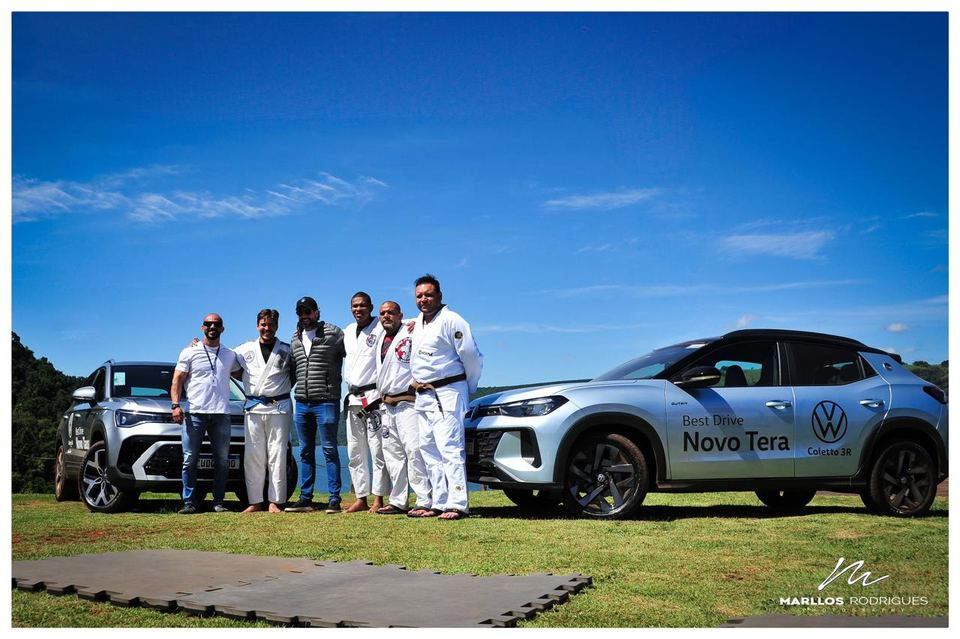
Quer saber como sua empresa pode participar?
Conversamos sobre a forma de apoio que faz mais sentido para o seu negócio e enviamos a proposta completa.
Fale com a gente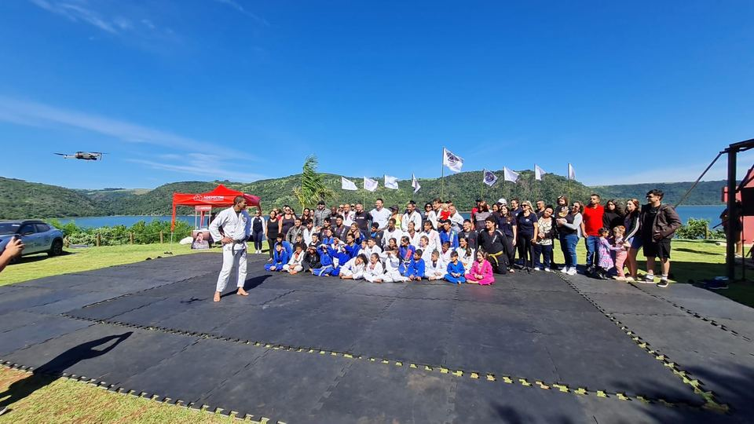
Formamos pessoas. Antes de formar atletas.
Fale conosco
Se fizer sentido para você, venha conhecer de perto. Sinta o ambiente, converse com as crianças e veja o que estamos construindo.
- @institutoproativo (abre em nova aba)
- @projetojjparatodos (abre em nova aba)
- @eddynorthfight.ourinhos (abre em nova aba)